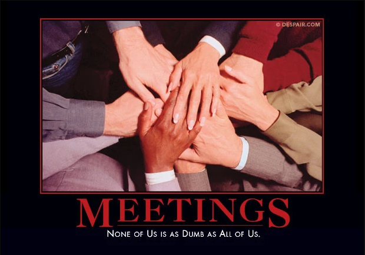

Human Resources
This is another piece that I'll never finish. The first draft was from my early cubicle days in the late 1990s. When I first moved to silicon valley, someone there told me that the ethos was "buy a car you don't need with money you don't have to impress people you don't know." In the end, it doesn't even come close to what the tech billionaires are playing these days. How are they not satisfied yet? How much is enough?
Previously published to:
A few years after I wrote this, I worked a contract in a large building. There was conflict over who would get the windows, so they boarded up all the windows.
sunken eyes, silent cries
hollow hearts, forgotten arts
earth neglected, wealth collected
calculated earnings, forest burnings
emotional frost, humanity lost
cans of soda, fruitless beverage
cartons of pizza
fatigue, stress, conformity, delusion
personal space compressed, nightmare, confusion
illusion, deformity
conspicuous consumption
etiolated fingers strangled by fluorescence
complete vacuum, empty human shells, absolute zero
muffled voices, muddling footsteps
bloodshot eyes,
corporate conference calls stifled by meeting room walls
high pressure fishbowl
pizza, pop, peripherals and programmers
satisfactionless endeavors
neglected health in favor of feigned wealth
abandonment of community, corporate impunity, lack of unity
plastic plants, venetian blinds, waste bins emptied daily
stark, sterile, cubicle and corridor halls
roaming, deserted
eyes on profits, eyes on terminals, eyes blinded by greed
passionless, repressed, expressionless, social regress, unable to redress
cool, dank, airconditioned hum, ventilation ducts
sport utilities, fast food, stop lights, vending machines
attempting to depend upon no others, but caught in the web
take, sieze, acquire, obtain, use, abuse, propagandize, jeopardize
strip malls, urban sprawls, plastic bags, pre-fabs
tilt-ups, insecticides, car cages
oversized houses, neglected spouses,
suburbs, feeder routes, freeways, traffic delays
glimmering parking lots, concrete earth, paved America
smog
cyclone fences
children as accessories to accessorize
portable phones, mobile homes, corporate housing
pagers, radar detectors, cd players, digital music
triple-garages,
manacled to mice, terminally captivated
monitor lizards
cell-phones chirping in the bathroom stalls
pagers beeping in the halls
huddled in a corner whispering into the phone, the closest that can be found
to a personal life
office supplies, silent cries, hidden fears, silent tears
thermostats
I thought I could be happy here, I thought I was missing something
hollow halls, hollow red eyes, hollow thoughts and lives
driven to work, to compete, to consume, to perform
overworked, overstressed, overtaxed, under resourced, inhuman
sterile, cold, clean,
obesity, unexpressed dependence and reliance, unvoiced human value
dehumanizing, propagandizing, pitching all the while
false and shallow smile
impure business friendships, people using people
wealth amasses but at what cost
what is left behind? crumbling buildings, slums, resource depletion,
unrecoverable habitat
investing in proffits rather than in communities
shallow foundations, shallow lives, eternal societal graves,
vending machines, no fruit trees
wasted time, wasted minds, wasted lives
waiting for the weekends, never fully fulfilled
Mondays, hump days, TGI Fridays, holidays
never slowing down to realize their lives are in a daze
working weekends, working never ends
quiet hall of cubicles, no laughter is accepted
air-conditioned cubicles are parking spaces for employees
windows facing parking lots with shades drawn all day long
cabinets, whiteboards, meeting rooms, monitors
phone systems, cellular phones, notebook computers
manuals, no bicycles, no fresh air, no differences
ordered, imposed upon, afraid to be themselves
shelves
turning to trolls from elves
muttering legions of half-human technicians
any interruption is a cause for celebration
beeping machines, fax tones, creeping through the halls
and nowhere in sight a sign of humanity on the walls
repetitive motion strain, arthritis, corrective vision lenses
keyboards and input devices, staplers, folders
technical resources all, including those that walk
no plants, no animals, no dust or dirt, barely living people
eyes strained from the radiation, fading as if underground
headsets, silent regrets, unvoiced objections
button-down bottom-line oriented management rejections
great distance from the ocean, not a sail in sight
weather blocked by concrete, to hide us from our plight
and where the sound of children, what is all this for
uniform resource locators, consumer packaged goods, all of it a bore,
instant lunch or fast food, drive or eat alone
uncomfortable silences, artificial exchanges of words
elevator speaches
mail rooms
acronyms, buzzwords
styrofoam, prepackaged,
glowing green exit signs unused.
elevators, receptionist manacled by a headset,
stale staircases, neglected
motivated by greed
Comments
Submit any comments here: